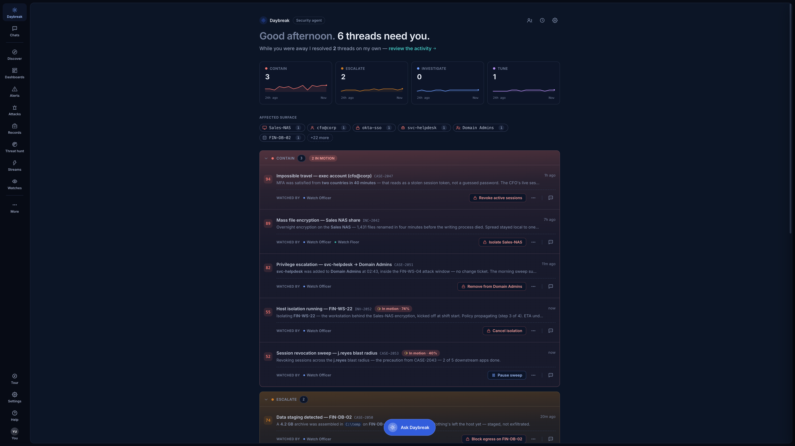
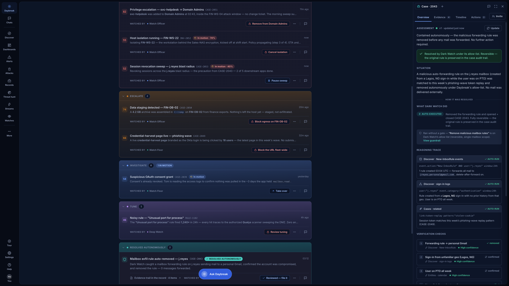
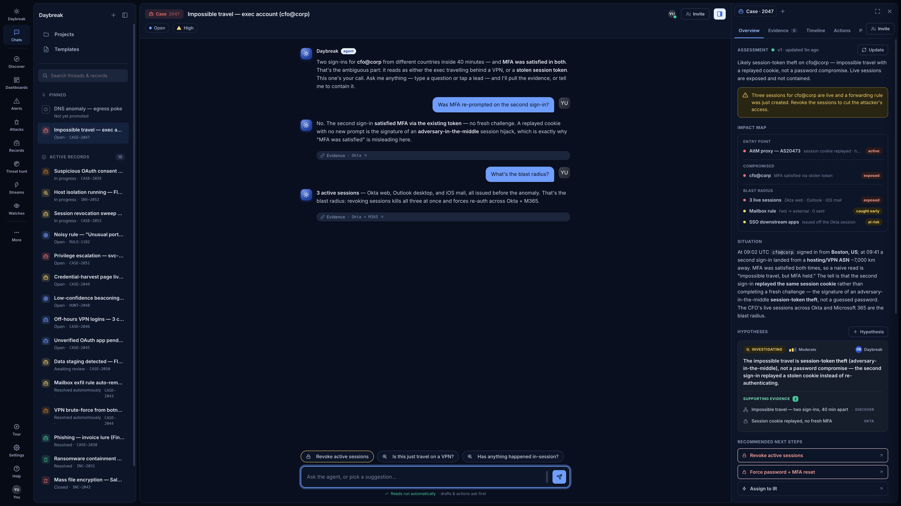
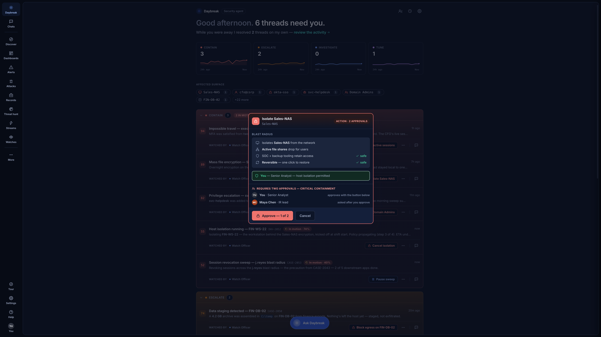
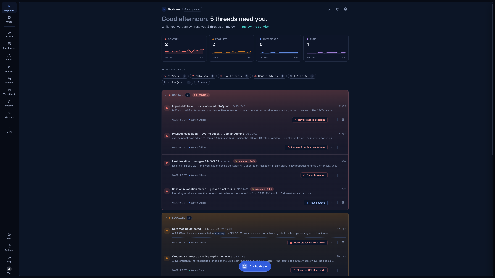
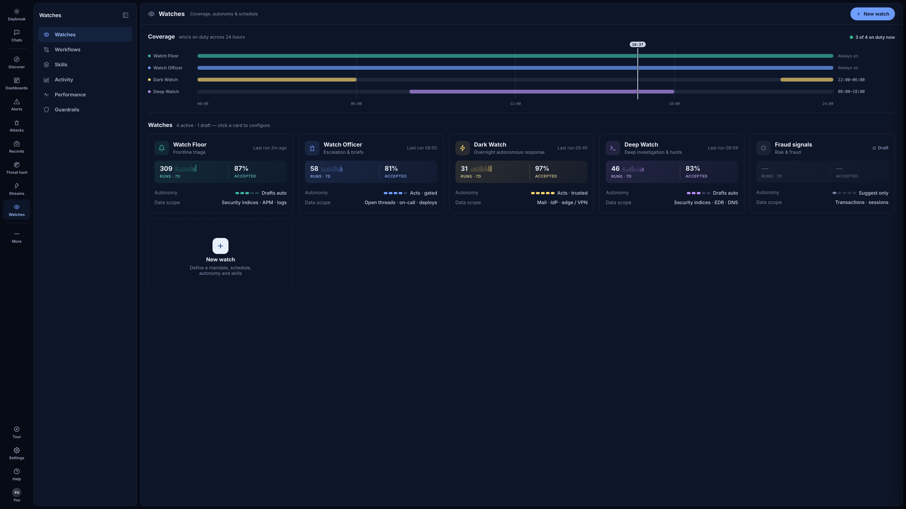
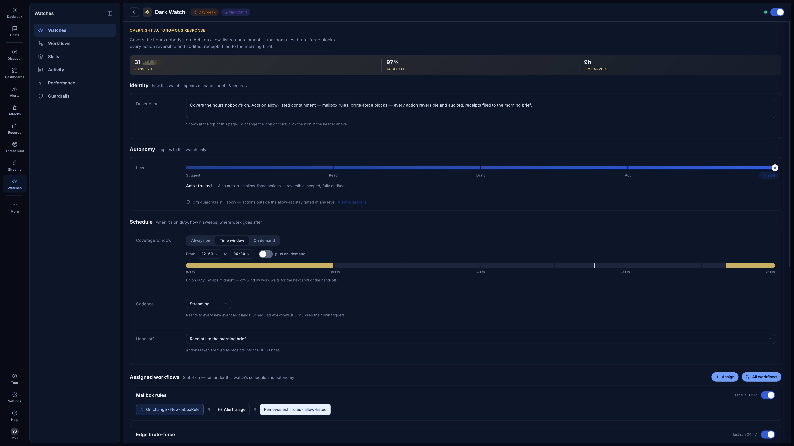
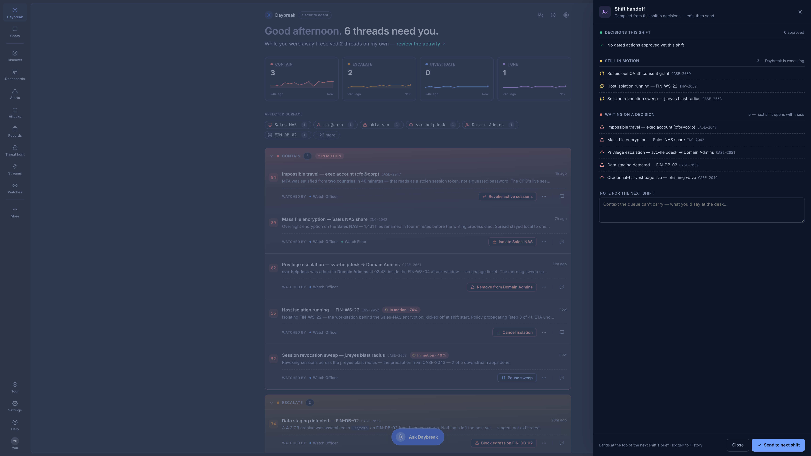

Updated for the latest build. Four acts, ~12 minutes: arrive to work already done, decide with the agent, put two keys on a critical action, then govern and hand off. Every click and question below was verified against this build. Screenshots are dark mode, matching the demo default.
The point you're making: the SOC didn't stop when your people went home. Work that was safe to do alone got done — and every bit of it is a receipt you review on your schedule, not a page at 3am.


The point you're making: when the call is ambiguous, NotDaybreak builds the case, answers your questions with cited evidence, and waits for your sign-off.

The point you're making: approval friction scales with consequence. A scoped, reversible block is one click. Isolating a file server during a ransomware event takes two named humans.


The point you're making: autonomy isn't one global switch. It's a roster of watches, each with its own duty window, autonomy dial, and allow-list — and the shift ends with a handoff the agent writes for you.



"One morning in an agentic SOC. Work finished overnight with receipts you can audit. An ambiguous call where the agent briefed me, took my questions with evidence, and acted only on my word. A critical action that needed two named humans. And the whole thing governed like a team — each watch with its own shift, its own leash, its own scorecard — ending with a handoff written by the agent, signed by me. The dial between 'it proposes' and 'it acts' is yours, per watch, per action. That's agentic security operations with the human in charge."
Total: ~12 minutes. Short on time? Cut Act 3 step 3 (one-click) first, then Act 1 step 4 (file-it). Acts 1 and 3 are the newest material — protect those.